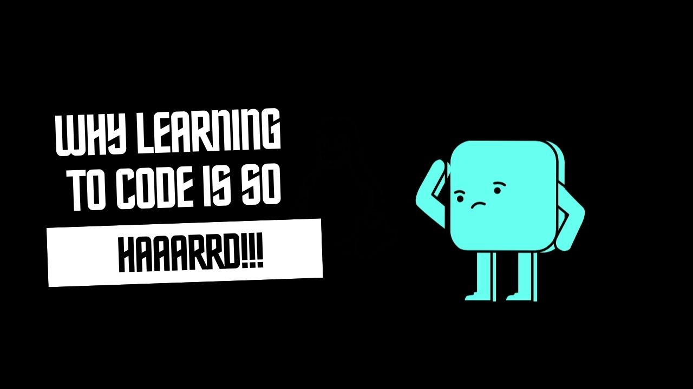

Learning to program is like picking up a new language—one that’s not only spoken but also written and logically structured. For many, it’s a journey filled with excitement, challenges, and, at times, frustration. But why is programming so difficult to learn, and how can you make the process smoother? Let’s dive in.
Why Is Learning Programming So Hard?
Abstract Thinking: Programming is all about solving problems in a way that a computer can understand. This requires abstract thinking—something that’s not typically used in day-to-day problem-solving. You’re often asked to break down a problem into smaller parts, think about how data flows, and structure logic in a way that’s both efficient and clear. This shift in thinking can be tough to get used to.
Syntax and Semantics: Every programming language has its own rules (syntax) and meanings (semantics). It’s similar to learning the grammar and vocabulary of a new spoken language, but with even less room for error. A small mistake, like missing a semicolon, can lead to frustrating errors that prevent your code from running.
Debugging and Error Handling: Let’s face it—no one writes perfect code on the first try. Debugging is a core part of programming, but it can be frustrating, especially when you’re just starting out. Learning to systematically identify and fix errors requires patience and a methodical approach, which can be challenging to develop.
Rapid Technological Change: The tech world moves fast. New programming languages, frameworks, and tools are constantly emerging. While this is exciting, it can also make learning programming feel like chasing a moving target. Just when you think you’ve mastered one thing, another, seemingly better tool comes along.
Overwhelming Resources: There’s no shortage of learning resources out there, but this abundance can be overwhelming. With countless tutorials, courses, and books, it’s hard to know where to start and which path to follow. It’s easy to get lost in the sea of information and lose sight of your learning goals.
Complex Concepts: Programming introduces concepts that can be difficult to grasp at first. Ideas like recursion, pointers, object-oriented programming, and concurrency are powerful, but they can also be complex and confusing, especially if you don’t have a strong foundation in the basics.
How to Make Learning Programming Easier
Start Small: Don’t try to learn everything at once. Choose a programming language with a simple syntax, like Python, and focus on mastering the basics. Learn how to write simple programs before diving into more complex topics.
Practice Regularly: Consistency is key in learning programming. Aim to code every day, even if it’s just for a short time. Regular practice helps reinforce what you’ve learned and makes it easier to progress.
Build Projects: Theory is important, but applying what you’ve learned is where the real understanding happens. Start with small projects that interest you—whether it’s a simple calculator or a basic website. Projects not only reinforce your learning but also make the process more enjoyable.
Break Down Problems: Programming often involves solving complex problems, but these can usually be broken down into smaller, more manageable parts. Start by tackling the simplest piece of the problem and gradually build up to the complete solution. This approach makes the task less overwhelming and more approachable.
Learn to Debug: Debugging is an essential skill for any programmer. When your code doesn’t work as expected (and it won’t, at first), don’t get discouraged. Instead, use it as a learning opportunity. Pay attention to error messages, use debugging tools, and try to understand why the error occurred.
Join a Community: You don’t have to learn programming alone. Join online communities, coding bootcamps, or local meetups where you can connect with other learners and experienced programmers. These communities provide support, motivation, and answers to your questions.
Choose Quality Resources: With so many resources available, it’s important to choose a few high-quality ones and stick with them. Look for reputable books, courses, or tutorials that provide a structured learning path and explain concepts clearly.
Learn by Teaching: One of the best ways to solidify your understanding of programming is by teaching it to others. Whether it’s writing blog posts, creating tutorials, or helping others in coding forums, teaching forces you to organize your thoughts and explain concepts clearly.
Stay Patient and Persistent: Learning programming takes time, and you’re bound to hit some roadblocks along the way. Don’t be discouraged by setbacks. Stay patient, keep practicing, and remember that every mistake is a step towards mastery.
- Practice Problem-Solving: Engage in coding challenges and exercises that focus on problem-solving. Websites like LeetCode, HackerRank, and Codewars offer a variety of problems that can help you improve your skills and gain confidence in your coding abilities.